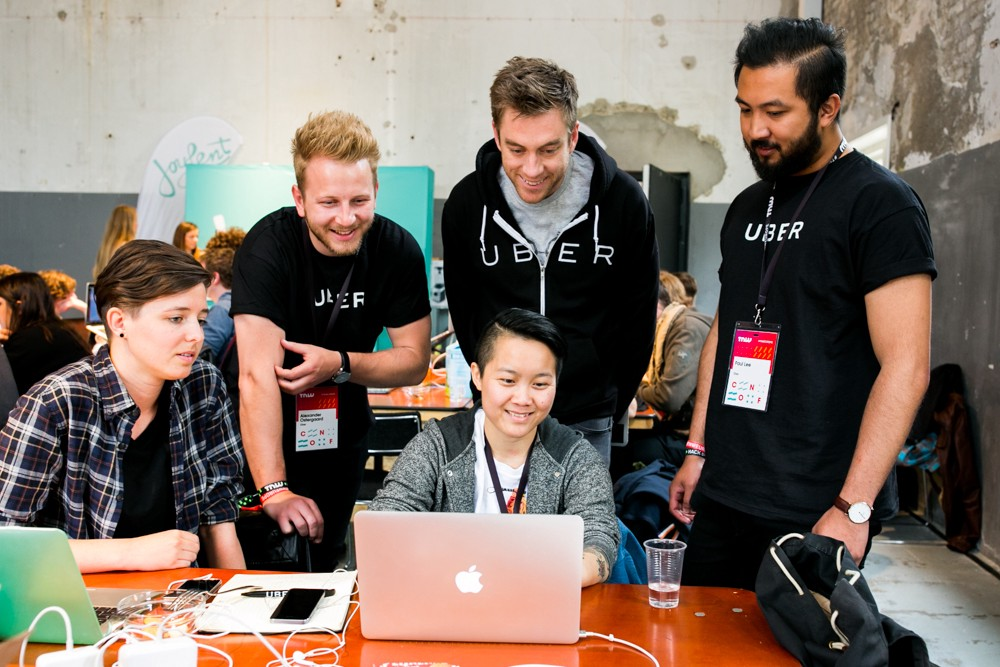

Inside the platform levels following keys to move:
- W - JUMP
- S - Crouch
- A - Move left
- D - Move right
Remember! You are a warrior eager to learn. You can also use abilities within your instruments (Q and E keys) >‿‿◕
The Percussive Arts Society is the world's largest percussion organization and is considered the central source for information and networking for percussionists and drummers of all ages. Established in 1961 as a non-profit, music service organization, our mission is to inspire, educate, and support percussionists and drummers throughout the world.
To be the global leader in percussion and drumming by providing unparalleled and interactive resources and experiences in percussion education, performance, and research.
Know moreMasters of Percussion is a game with the main purpose of teaching players about the different percussion instruments that exist in the different regions and cultures of the world, their level of complexity and their moves. The game will star a small bear, controlled by the player, who will be able to converse with various animal NPCs about the instruments of his culture and will have to pass levels of obstacles that separate each region or culture. In addition, to test the player's learning, he will perform a series of quizzes in order to advance in the game and continue his journey.
Inside the platform levels following keys to move:
Remember! You are a warrior eager to learn. You can also use abilities within your instruments (Q and E keys) >‿‿◕
We are The Rolling Drums, an indie game developer group, focused on creating games for education and wellness. We are:
And we are here to help!
